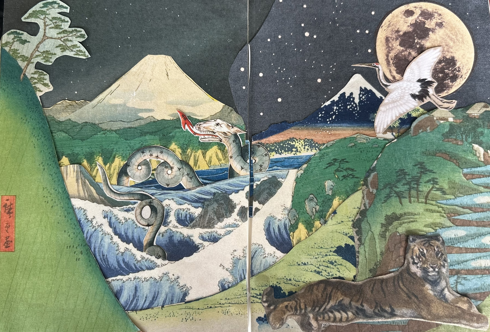
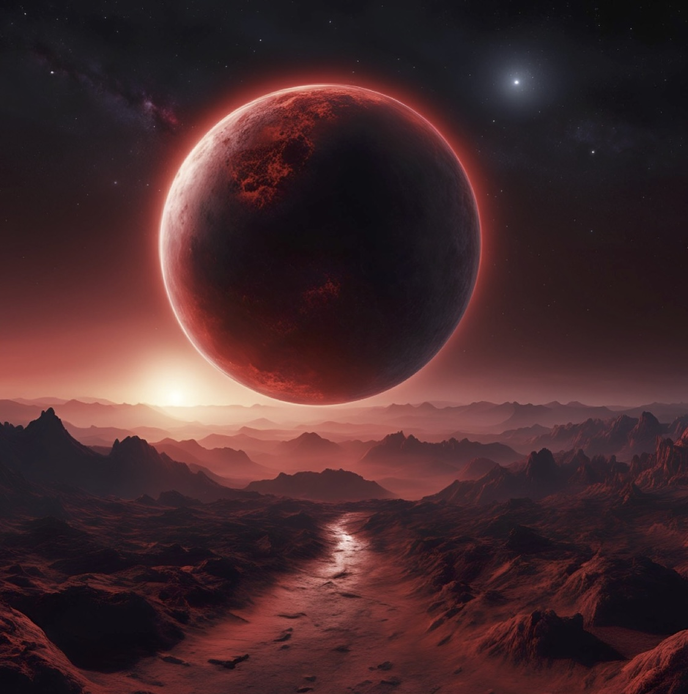
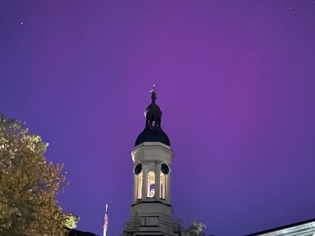
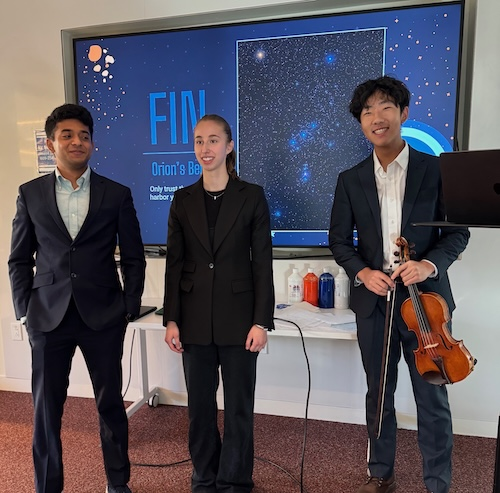
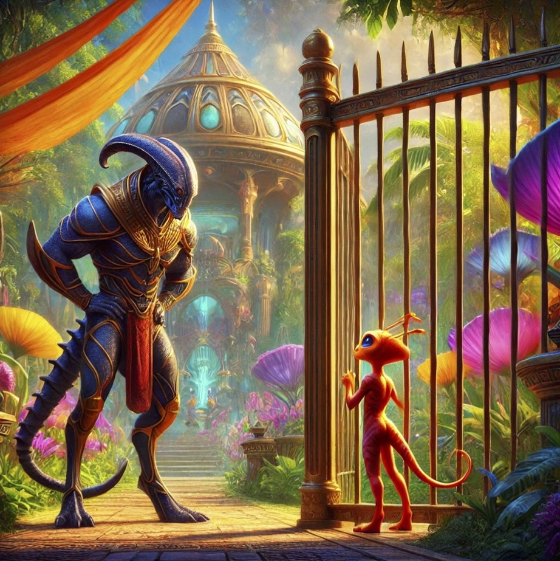
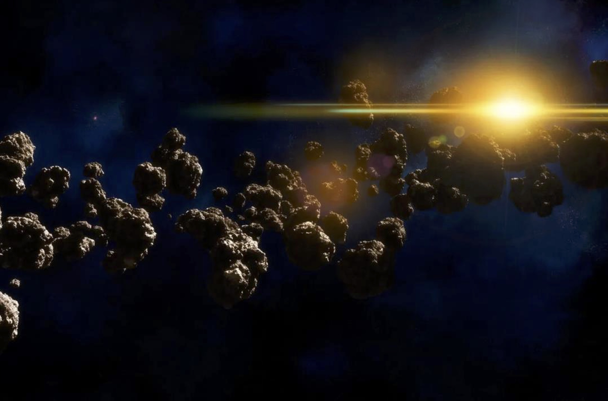
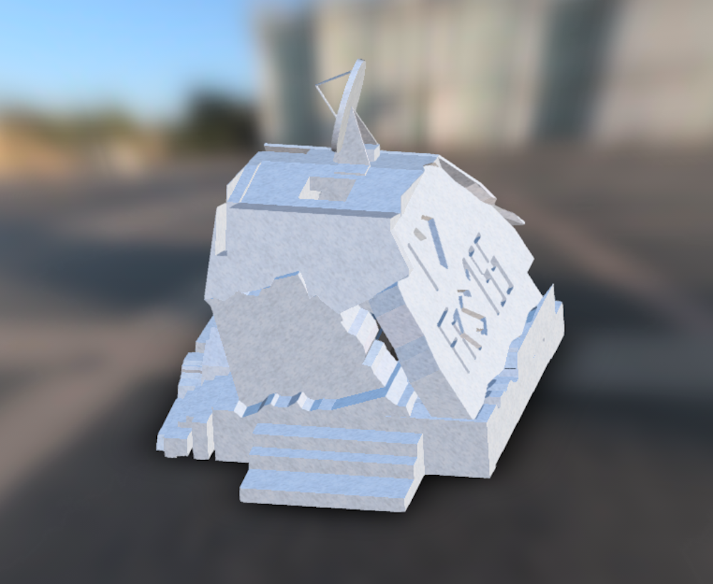
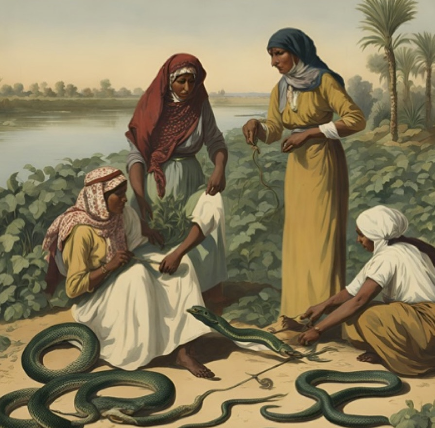
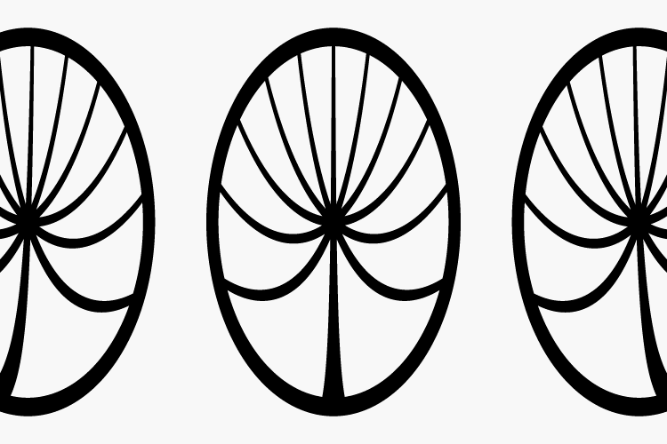

About The Course
Instructor: Dr. Erin E. Flowers, *23
Richard L. Smith '70 Freshman Seminar
In this course, we explore how different cultures around the world studied and used the night sky through their artifacts, architecture, and (when available) texts. This archaeological study is paired with complementary astrophysics 101 lessons on the different celestial phenomena humans have been observing for millennia. To view a course pamphlet, click here.

The Creation of the Universe: The Crane, The Tiger, and the Serpent
By Sasha Allen
Before the beginning of the world, there was only silver mist, swirling in a cold, endless void. As eons passed, the shimmering mist coalesced into the form of a graceful crane. The crane emerged fully grown from this vast mist, wise and understanding.
Millennia passed, and the crane remained alone in this great universe. Longing for company, the crane shed two feathers from his great white coat. From the first feather, a majestic striped tiger sprang forth, strong and quick. From the second, a glistening sea serpent slithered into existence, powerful and cunning.
Even though they were siblings, born from feathers of the same crane, the tiger and serpent were at odds from birth. Their disagreements began as small tussles but grew over time.
One day, a disagreement sent the two spiraling into full-blown war. The tiger and serpent clashed violently, with tufts of fur and scales shredded off in the battle catapulting into the distant reaches of space. They tore viciously at each other, each sinking their teeth and claws into the flesh of the other. Their clamor reverberated throughout the universe.
The crane tried to intervene, but despite begging for peace, he could not stop them. After days of unending combat, their fighting reached its peak. Neither was willing to yield, and their power had proved to be equal; both perished in the battle, falling intertwined.
Heartbroken, the crane knew he must immortalize his children. He created the planet, turning the tiger into the earth and the serpent into the sea, so that even in death, even though they disagreed, they would always be together as brothers.
He then turned the hundreds of scales and tufts of fur lost in the battle into shining stars in the sky as a reminder of this great war. Pained at the devastating loss of his beloved children, he shed a single bright tear, which fell in the sky above the planet and became the sun.
Finally, he put his wings above his head and turned into the moon, so he could always watch over his children below him. At night, one can see the moon wax and wane as the crane slowly moves through the sky, folding and unfolding his wings as he looks down at the land and sea below.
When the moon is full, the crane is dancing, his wings spread out to his sides. When the moon is slender, the crane has his wings stretched towards the earth, reaching out for his children with yearning.nHis grief easing into hope, he gazes upon his children now transformed into a dynamic planet, ocean and earth coexisting peacefully yet bursting with ever-changing life.
We can still see the debris from the mighty battle between the serpent and the tiger, preserved as shining fragments in the sky above us. Sometimes, one might even spot a flash of fire shooting through the sky: one of the tufts of fur or scales plummeting down from the sky to the earth. And when the crane’s heart is most full of love, one can look to the northern horizon to see colorful pillars of rainbow light dancing in the midnight sky.

About the Peru Fall Break Trip
FRS 155 spent Fall Break (October 12th - 20th, 2024) in Cusco, Peru, and the nearby Sacred Valley. View the trip itinerary, class blog, and more here.

Astrophysically-motivated Worldbuilding: Life Around a Red Dwarf Star
By Eliot Witherspoon
For my fictional world, I chose to create a planet named Crimsonos that is very similar to the Earth, but that is orbiting a red dwarf star. Just like the Earth, Crimsonos is in the habitable zone of its red dwarf and has both land and water. However, being situated around a red dwarf would make life on Crimsonos significantly different from that on earth. One major effect that orbiting a red dwarf star would have on Crimsonos is that the light produced by the star would befar redder and dimmer than what we are used to on earth. This means that the organisms on Crimsonos are specially suited to be able to see in very low light with big eyes and more sensitive rods that can pick up lower light in redder ranges. This would also make it possible that many organisms would evolve without any sense of sight at all, instead relying on smell or heat sensing capabilities.
Since red dwarfs emit far less heat than the sun, Crimsonos would have to be rather close to its red dwarf for water to be able to exist in a liquid state. This would mean the star would appear much larger than our sun, so inhabitants of Crimsonos are likely to revere the sun because of its significant presence in the sky. However this reverence might also be born out of fear, as red dwarfs are known for their intense solar flares and high levels of radiation, which could prove very dangerous to any organisms on Crimsonos who have not developed ways of protecting themselves from intense radiation, such as thick hair, protective armor, or a life underground or deep underwater.
An even more important effect of Crimsonos being so close to the sun is that the close proximity would cause the star’s force of gravity on Crimsonos to be strong enough to cause tidal locking. Tidal locking means that one side of the planet faces the sun at all times. This would give one side of the planet a perpetual day, and the other a perpetual night. The day side would become extremely hot, while the night side, with no insolation, would be extremely cold. This means that most life on Crimsonos would likely be situated in the band where night and day meet. Perhaps some organisms would evolve adaptations to survive the intense heat and radiation, while others would be able to survive the intense cold perhaps through thick fur or blubber. The diversity and concentration of life would be greatest in the transitionary band with animals adapted to survive rapid changes in temperature. Organisms advanced enough to develop culture would create myths explaining the two sides of Crimsonos, perhaps with deities representing each side.
Finally, red dwarf stars exist on much longer timescales than our sun. Without significant disruptions from radiation and solar flares, life on Crimsonos would have ample time to evolve into complex late-stage ecosystems with intricate interactions between species and a wide variety of highly specialized life forms. The intense environmental pressures present on Crimsonos would intensify this vast specialization and lead to extremely specific adaptations and certainly many creatures we would find fascinating.

Observing Notebook
By Yuxi Yue
Another component of the class was to keep a detailed observing notebook. Since this course is on ancient astronomy, students were not required to use telescopes. They were instead encouraged to go out and describe what they saw with the naked eye. They were required to note the date, time, location, weather, and phenomena that they were observing with drawings (or photos).Here is one example.

Midterm Video Highlight: Guiding Stars
By Gabrielle Liberman, Aarnav Sheth, and Jerry Zhang
For their midterm, students were tasked with researching an astrophysical phenomenon and designing a cultural "artifact" that could ostensibly used to study or describe said phenomenon. Here is a video of a performance about how the stars could be used for navigation, after a presentation on the star-forming region, the Orion Nebula.

"Exotic" Exoplanets: The Hero's Tale
By Nick Hagedorn
Tulin was a Super-Earth exoplanet, located in a exosolar system far different from our own. A few hundred species lived on Tulin, though of these species, the Tulit were the most intellectually advanced. This story, however, does not concern the Tulit. For while the Tulit had the power—both intellectually and physically—to control Tulin, it was the Ferin instead who appeared in control.
This fact is largely due to the Tulit’s shy nature. They were a species that largely preferred to be unknown, so they feigned ignorance to the Ferin, luring the latter species into a false sense of superiority. The Ferin believed Tulin to be theirs, and behaved as such. They paid little regard for other species, and they weren’t particularly kind to the Ferin. Some Tulin kept Ferin as pets, and there were rumors that some Tulin had even eaten a Ferin or two.
One fact that often struck the Ferin as weird was their planet’s name. There came a time in every little Ferin’s life when, after learning to speak and only just starting to develop critical thinking skills, they thought to ask why their planet Tulin was named after a different species, the Tulit? When asked, their parents told them exactly what they had learned when they themselves were children. The just-so story goes like this:
Once upon a time, there was a king of all the Ferin, named Fino. He had ruled the planet for a decade, and everyone loved him. And by everyone, that doesn’t just mean the Ferin. Under Fino’s rule, complete harmony had been brought to the planet. All the animals, from the aquatic to avian, frolicked around and got along together, and so all the animals also loved Fino. One species, however, didn’t seem to get along with the king. The Tulit seemed to always be by themselves. They never hung out with the other animals, and seemed a rather isolationist species. Fino reasoned that this was because they were too unintelligent to understand the existence of other species; they could only be around their own kind.
One day, Fino decided he wanted a Tulit in his backyard. He had his servants capture such a Tulit, and they found who they named Tulin. Now Tulin initially put up a fight and resisted, but soon he was under their control. The king had always been one who liked people playing hard-to-get. This extended beyond his romantic life, and so he suddenly became invested in getting Tulin to like him. He tried taking Tulin on walks, but Tulin had to be dragged outside. The king tried getting Tulin a pet of his own, but Tulin seemed mortified at the idea of being with other animals. Feno soon started dreaming bigger. He gave Tulin his own province, but Tulin merely feigned a smile.
The king, having all but given up, called out rhetorically, “What could you possibly enjoy?!” He tried to think of what could be the biggest honor of all, and eventually he realized: what could be better than having the planet named after you? That day, Feno decreed the planet to forever be known as Tulin. When he communicated this to Tulin, the Tulit merely smirked, before hopping the fence and running off into the wilderness. Feno started to fume. The king shouted, “Y ou ungrateful little … !” But what was done was done, and the law could not be reversed. Thereafter, the Ferin always regarded the Tulit as an ungrateful, ignorant species, even though the Ferin had named their own planet after one of them.

Midterm Research Highlight: The Asteroid Belt
By Malcom Tafadzwa Dzimiri, Andrew Song, Eliot Witherspoon, and Yuxi Yue
For their midterm, students were tasked with researching an astrophysical phenomenon and designing a cultural "artifact" that could ostensibly used to study or describe said phenomenon. Here is a snippet of the students' research presentation on the star-forming region, the Asteroid Belt.

Final Research Highlight: Designing an Observatory
By Parth Jain
For their final, students were tasked with researching an astrophysical phenomenon, designing a cultural "artifact", and designing an observatory that could ostensibly used to study or describe said phenomenon. Here is an interactive example of an observatory designed by one of the groups in Fusion 360. It was inspired by one of the oldest forms of observatories wherein an astronomer stands at the bottom of a long well-like structure to observe the sun's image as is cast on the ground.

Night Sky as Afterlife
By Aarnav Sheth
Shu was a man of many talents, but none were as successful as his endeavors in farming. Shu grew up in a poor household far from the Nile, but he had always had a deep love for plants. He got his first potted plant, a baby desert date tree, at the age of 10. He nurtured the tree for many years until it grew into a large spectacle for the whole village to see.
One day, a merchant came into town to sell his crops by the Nile. He was astonished by the staggering height of the tree, so he asked around the entire village to find who had created it in all its glory. He was quickly directed to Shu, and after a short conversation he offered him a full time apprenticeship to farm on the Nile.
Years passed on the Nile as Shu learned to grow all kinds of crops. He quickly became a prodigy on the farm, and all the other farmers envied his tact with the crops. When Shu was eventually given ownership of the farm by the merchant (he was getting old and had grown fond of Shu), the other farmers saw this as an opportunity to bring about his demise. They poisoned his crops with Saharan Horned Viper venom, and Shu was driven bankrupt.
Shu was driven to find other means of working, so eventually he settled as a laborer in the construction of the pyramids. But the failure of Shu’s farm was not enough for the jealous farmers, so they hatched a plan. One day when Shu was working, they tipped the counterbalance of one of the mighty pillars, causing it to fall on poor Shu.
Shu was not a religious man, so he had not thought about what the afterlife could have looked like during his time on Earth. But reality quickly set in when Shu woke up...
Bright lights blinded Shu as he slowly blinked his eyes open. A large mechanical whir overwhelmed his senses as he tried to get his bearings in his new reality. It was evident that he was dead, but he felt very much alive. As his senses started to come back to him, he felt a familiar graininess in the floor below him. It felt like it was almost soil...
After what seemed like an eternity (it very well could’ve been), Shu’s vision returned and he realized that he was back on a farm. But, it wasn’t just any farm, it was a farm in the heavens far above his small plot on the Nile. He was among the stars that he used to gaze upon during his life on the Earth.
As time passed on this space farm Shu began to notice others around. Brief conversations with them helped him realize that he was indeed deceased. But what was this strange afterlife? The place was riddled with strange contraptions like a no touch tiller that seemed to have unlimited energy - because there is no air resistance in space which could definitely be a viable idea for a startup :)
Eventually, Shu was able to have a talk with the head of the farm Ra. It turned out that the Egyptians were right to an extent. Ra, the sun god, was the overlord of the realm. However, things were broken down a little differently than expected. In the afterlife, good people were allowed to pursue their passions for eternity, which for Shu happened to be farming. However, those that did wrong on the Earth were punished for their actions by having to face the consequences of their actions for eternity. As such, when the jealous farmers perished, they were made to work alongside Shu at his farm. None of the jealous farmers had actually enjoyed the craft during their time on Earth, but they did so to control the food supply of the region. So as Shu enjoyed working every eventful day on the space farm, they passed the time running from snakes as they tended to the plants.

Final Video Highlight: Special Relativity
By Malcom Tafadzwa Dzimiri, Nick Hagedorn, and Andrew Song
For their final, students were tasked with researching an astrophysical phenomenon, designing a cultural "artifact", and designing an observatory that could ostensibly used to study or describe said phenomenon. Here is a video of a performance in the vein of a Greco-Roman song-storytelling about Special Relativity, and the lyrics are below:
And so for the modern context, the Greek Gods Say:
Special relativity is an awesome explanation
Of how speed affects mass, space and time!
At the speed of light (C0!) Time is relative!
Do you see the vision?! (Einstein’s vision!)
Now remember: Time is relative!
When Ophelia got back to Earth
She had traveled at 99.5% at the speed of light for 500+ years
That was just a little over 2 minutes from her perspective!
Special relativity is an awesome explanation
Of how speed affects mass, space and time!
At the speed of light (C0!) Time is relative!
Do you see the vision?! (Einstein’s vision!)
And so when she got back
It’d been centuries!
To her unfortunate surprise, Lydia was dead.
As more time had went by
On our slower moving planet!
Special relativity is an awesome explanation
Of how speed affects mass, space and time!
At the speed of light (C0!) Time is relative!
Do you see the vision?! (Einstein’s vision!)
The End of the World: Apocalypse Story
By Raine Ducey
It is said in legends and oral stories of the Stilt Society that thousands of years into the future, when the sun has expanded significantly — not yet enough to entirely consume the Earth, but enough to melt all of the water contained in ice formations found throughout the entirety of Earth’s surface — all of the Stilt Society will perish. This melting, although very slow, bit by bit will begin to impact the Society of Stilts, who must live on structures supported by extremely tall pipe stilts. These pipe stilts serve as an innovative filtration system that allows the poisonous, disgusting algae to be filtered out of the water, as the toxic algae cannot survive at high altitudes.
The gradually rising water levels of the Earth will cause the pipes to slowly become unstable, as their foundation starts to flood with water from the melting ice formations. These rising water levels will cause the algae to begin eating away at the material of the pipes that supply water to the whole Stilt Society. Currently, for the Stilt Society, this is not a problem because the algae does not touch the outside of the pipes, since water is siphoned up from below the ground.
Once the algae starts eating away at the outside of the pipes, however, the structural integrity of the pipes will be at great danger. Although the best engineers and creative minds will endeavor to figure out a solution, they will inevitably realize that they are helpless. Even if they were able to find a solution, they would no longer be able to safely climb down the pipes without touching the poisonous algae. Determined to find a different way to save their beloved society, the engineers will try to siphon water at a much faster rate to account for the rising water levels in hopes of matching the rate at which the water rises. Although this works for a few years, the water levels will begin to rise at an increasing rate. Soon, there is absolutely nothing that the Stilt Society can do to prevent their collapse.
The houses on taller stilts will collapse first, and one by one, every structure will collapse and succumb to the vicious algae. When the people of the Stilt Society inevitably touch the algae, they immediately become absorbed into the toxic mass. Eventually, any living organism that touches the algae will transform into the algae itself, until the algae is the only living organism left on Earth.
Soon after the apocalyptic end of the Stilt Society, the Earth will appear a brilliant sea of red, as the red algae will taint all water on Earth. Whether the algae will transform the planet into an entirely different entity, and if a similar society will ever roam the algae-tainted Earth, is unknown. Even though the people of the Stilt Society assume their dismal fate is ineluctable, they still try to respect and give offerings to the algae, in hopes that the algae will spare them in the future from its destructive consumption.


{kind=link}
{kind=link}
{kind=link}
{kind=link}
{kind=link}
{kind=link}
{kind=link}
{kind=link}
{kind=link}
{kind=link}